マニュアルの表現に関して
本マニュアルでは#(シャープ)と大文字の英語を組み合わせた記号表現があります。この意味以下のようになりますので、ご理解の上お読みいただけますようお願い申し上げます。
| 記号 | 読み方 | 説明 |
|---|---|---|
| L(エル) | レイアウト | 表示されている画面の名称 |
| B(ビー) | ボタン | 画面上のボタン |
| F(エフ) | フィールド | 画面上の入力スペースのこと |
| T(タブ) | タブ | 画面上のタブスペースのタイトル |
| S(エス) | スクリプト | スクリプトメニューにあるスクリプト名 |
例１）L[メインメニュー]→B[外来受付]
メインメニュー画面の、外来受付ボタン（を押す）となります。
例２）L[診療記録]→T[病名]→F[病名]
診療記録画面の、病名タブの、病名入力スペースとなります。
カルテ記録はSOAPのテキスト入力と、左タブ内リストから選択して処方などを入力する診療行為入力があります。入力した内容は「処方せん」「２号用紙」で出力する事も可能で、紹介状などの出力フォームもあります。また、Doやセット入力機能もあり利用形態に合わせて効率よく診療録を記録することができます。
基本はいずれの項目もキーボードから適宜入力してください。
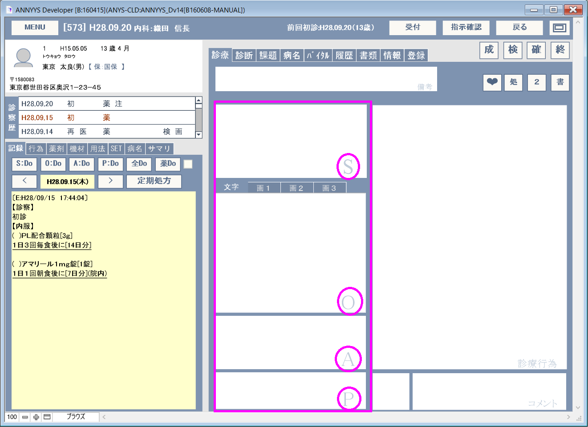
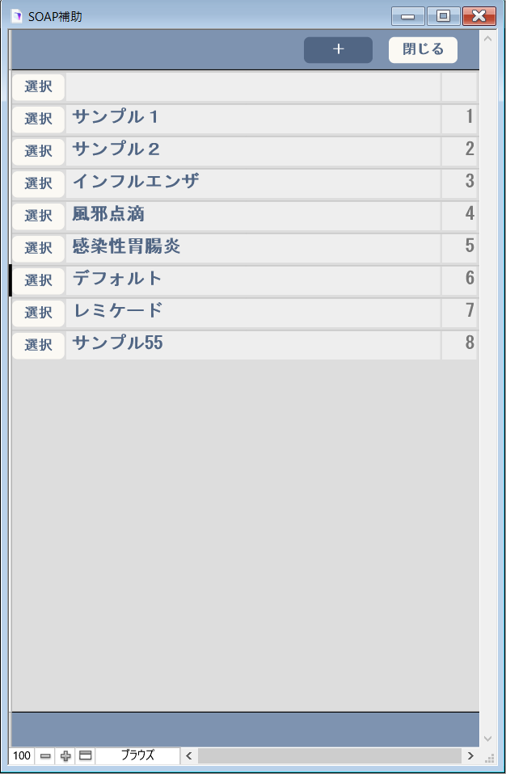
また、S,O,A,Pの文字（○枠の部分）をクリックすると、診療行為入力の補助画面、L[SOAP補助]が表示されます。こちらは入力を簡便化するために、定型内容を登録しておけるので必要な時は「定型を利用して部分的な修正を行う」などのような利用できます。
診療行為は右のタブ項目から必要事項を選択する形式で事で入力します。
これら診療行為の情報はレセコンに会計情報を送信する元データとなるため診療行為コードとともに記録されます。判断料や加算項目などの多くはレセコン側で自動的に判断されるためここでは主だった行為のみを入力します。
入力された内容はテキスト方式で入力されていますので必要に応じて修正可能です。（コード番号は修正削除しないでください）
特徴として、これら診療行為データもテキスト形式で入力されているだけなので、数量の変更や部分的な修正が容易に行えます。
診察記録が完了したら必ずB[確]を押すようにしてください。このボタンを押したタイミングで記録のバックアップが取られますので「保全性・真正性」の意味で重要な機能が含まれています。
[O]object部分にあるT[画像]を選択すると、画像などが挿入できるオブジェクトフィールドが表示されます。
この部分は、あらゆるバイナリデータを保存できますがANNYYS_D版では画像もしくはイメージを挿入する事を前提に用意しています。
このオブジェクトフィールドをクリックすると（データがない場合）、WindowsではOSに標準で付いているペイントソフトが立ち上がります。（MacOSの場合は、何かしらインストールして、呼び出せるように登録する必要があります。）
※Win,Macどちらでも手書きイラストを挿入する場合、最終的にはお絵かきソフトで書いたものをコピー＆ペーストで貼り付けます。
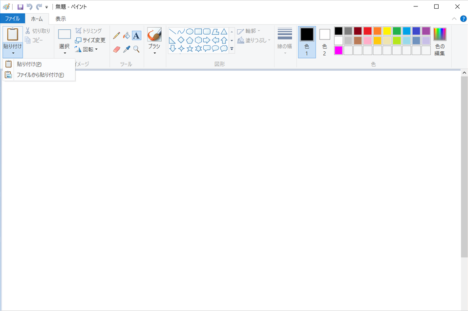
ペイントは簡単なソフトです。
そのまま記録してもかまいませんが、シェーマからイラストを編集する事も簡単です。
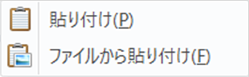
右上の「貼り付け」部分をクリックして「ファイルから貼り付け」を選択します。
必要なシェーマを選択します。
※一部シェーマはダウンロードしたファイルに梱包されていますので、解凍したものを利用のＰＣ上に配置しておくと便利です。
えを書き終わったら、「選択」メニューから四角形選択を選びます。
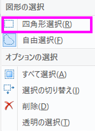
取込みたい場所を囲んだら「右クリック」>「コピー」を選択します。
ANNYYS_Dの画像部分へ戻り、オブジェクトフィールドの上で「右クリック」＞「貼り付け」を選択します。 ※MacOSの場合コマンド+Vでペーストできます。
MacOSの場合、OS標準のペイントソフトがありませんが何かしらペイントフソフトウェアをインストールすれば同じようにスクリプトから呼び出せるようになります。
編集するスクリプトはS[F:診察画面/スケッチ]です。
スクリプトのEventを送信部分を有効（代わりに「フィールドへ移動・・」は無効にする）にして、開きたいアプリケーションを指定すれば完了です。 ※カスタマイズはL[基本設定] B[UserMemo]に記録しておき、アップデートやメンテナンスのときに同じ作業ができるように保管しておいてください。
選択した項目がなかなか思った場所に入力されないときはテキスト内を直接編集する事も可能です。
例えば、【処置】に[生理食塩液 ２０ｍＬ]を入力しようとしたが【注射薬剤】になってしまった場合などは
【注射薬剤】にある[生理食塩液 ２０ｍＬ]をカット＆ペーストか移動させて、目的の【処置】に入力してください。
| 【注射薬剤】 [643310182]生理食塩液 ２０ｍＬ[.2管] 【処置】 [140000610]創傷処置（１００ｃｍ２未満） | [6・・]生理食塩液 ２０ｍＬ[・管]の行を選択し処置の項目のところへ移動（カット＆ペーストも可） |
| 【処置】 [140000610]創傷処置（１００ｃｍ２未満） [643310182]生理食塩液 ２０ｍＬ[.2管] | 不意に入力されてしまった【注射薬剤】が必要なければカットしておく。 |
【重要】診療行為欄はテキスト形式になっていて直接編集できますが、このスペースの内容で重要なのは以下の通りです。
※これらの内容は意味なく修正したり削除したりしなようにしてください。データ通信に支障をきたす場合があります。
T[行為] B[診医]
初診・再診関連項目から該当する診療行為を選択します。
| 診療行為欄には例として以下のように入力されます。 【診察】 [111000110]初診 |
| 【診察】 [112007410]再診 |
| 【診察】 [112007950]電話等再診 |
[ORCA]入力後に特に修正する必要はありません。また初再診項目が無い場合は自動で判別されます。
T[行為] B[診医]
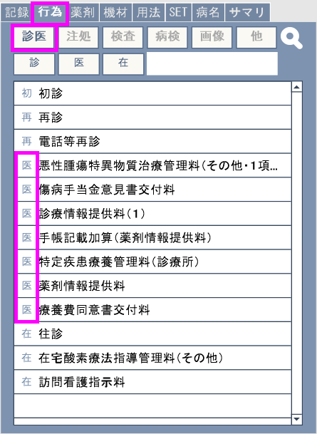
医学管理料関連項目から該当する診療行為を選択します。
診療行為欄には例として以下のように入力されます。
| 【医管】 [120002370]薬剤情報提供料 |
| 【医管】 [113002850]てんかん指導料 |
| 【医管】 [180016110]診療情報提供料（１） [810000001]ABC病院（←テキスト入力） ※診療情報提供料など紹介先用法が必要な場合フリーコメントコードと共に紹介先病院名などをテキスト入力する必要があります。 コメントコードはT[用法]にありB[定型]・B[補足]・B[数日]・B[他コ]の分類から選択できます。フリーコメントはT[用法]B[他]にある[810000001]です。 [HINT]コメント入力が必須の項目などはSET登録をお勧めします。 |
T[行為] B[診医]
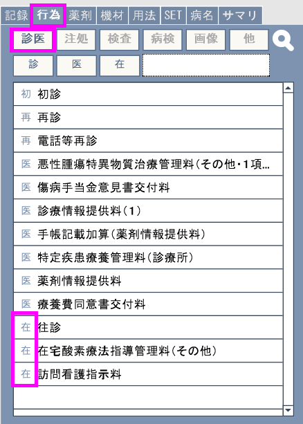
在宅医療関連項目から該当する診療行為を選択します。
【診察】や【医管】と同じ場所で下の方にリストされています。
診療行為欄には例として以下のように入力されます
| 【在宅】 [114009210]在宅自己注射指導管理料（１以外の場合） |
※在宅薬剤を処方せんに記載する場合には【在宅薬】を参照してください。
T[薬剤] B[注射] R[在]
【在宅】で在宅自己注射指導管理料などを算定した場合処方する注射薬剤を選択します。
T[薬剤] B[注射] R[在]を指定してから注射薬剤から適宜選択します。
診療行為欄には例として以下のように入力されます
| 【在宅薬】 [620006199]イミグランキット皮下注３ｍｇ ０．５ｍＬ[4筒] [001000101]医師の指示通りに ※「[001000101]医師の指示通りに」は、#T[用法]#B[用法]で選択できます。 |
【在宅薬】として入力された項目は処方せんとして発行されます。
T[機材] B[材料] R[在処]
在宅処方として何らかの特定機材を算定する場合にはR[在宅]を選択してください。処方せんに記載する場合にはR[在処]を選択してください。
診療行為欄には例として以下のように入力されます
| 【在宅材】 [777770000]（その他の特定器材） |
※用法などが必要な場合ははT[用法]から適宜入力してください。
【内服】
T[薬剤] B[内服]
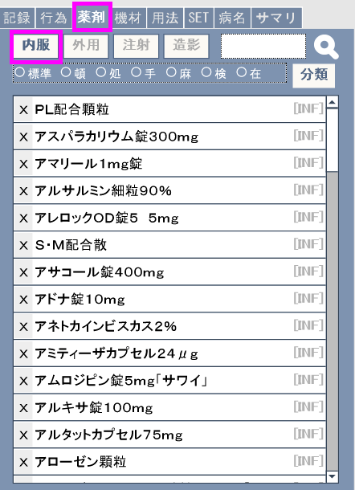
【頓服】
T[薬剤] B[内服] R[頓]
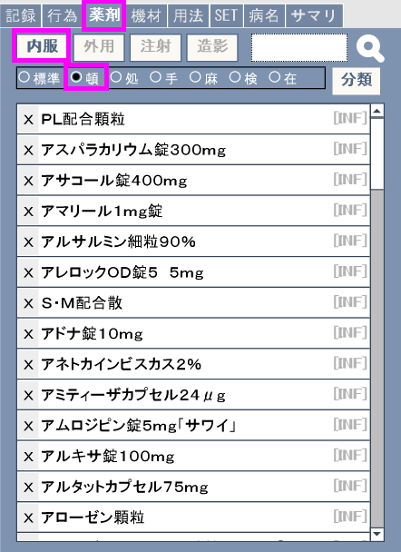
目的の薬剤該当画面から薬剤を処方します。
表示されたダイアログで数量を確認します。
次に用法#T[用法]#B[用法]から用法を選択します。
※薬剤に対して用法を選択した場合記憶されていますので２回目からは次の用法確認画面が出てきます。
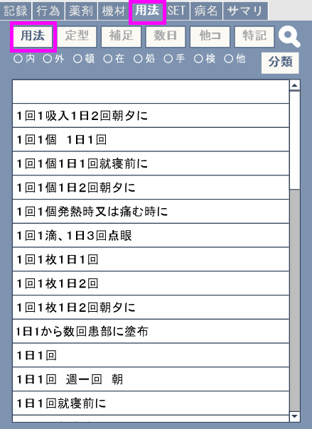
内服・頓服の場合は日数または回数を確認します。
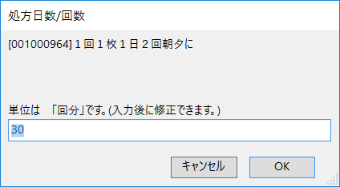
複数薬剤がある場合はこれらを繰り返します。
診療行為欄には例として以下のように入力されます
| 【内服】 [611130089](Ｘ)デパケンＲ錠２００ ２００ｍｇ[2錠] [001000206]１日２回朝夕食後に[30日分] [611240378](Ｘ)テルネリン錠１ｍｇ[1錠] [611170513](Ｘ)デパス錠０．５ｍｇ[1錠] [001000113]１日１回就寝前に[30日分] 【頓服】 [610462006](Ｘ)レルパックス錠２０ｍｇ[1錠] [001000123]頭痛時に[6回分] [621558101](Ｘ)ＳＧ配合顆粒[1ｇ] [001000123]頭痛時に[10回分] |
【外用】
T[薬剤] B[内服]
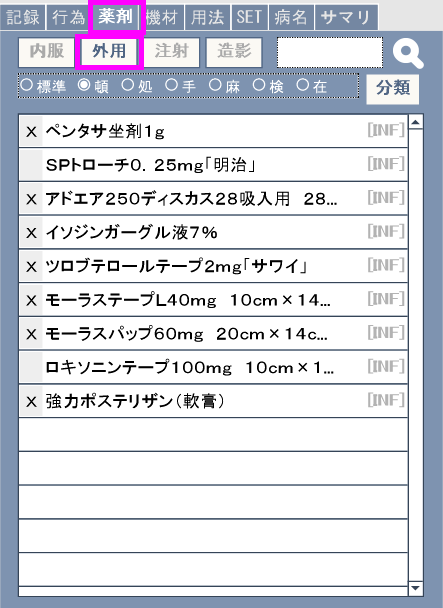
【頓服】【外用】も同じ要領で入力します。
※入力後に数量などの変更がある場合は直接修正してください。
T[行為] B[注処]
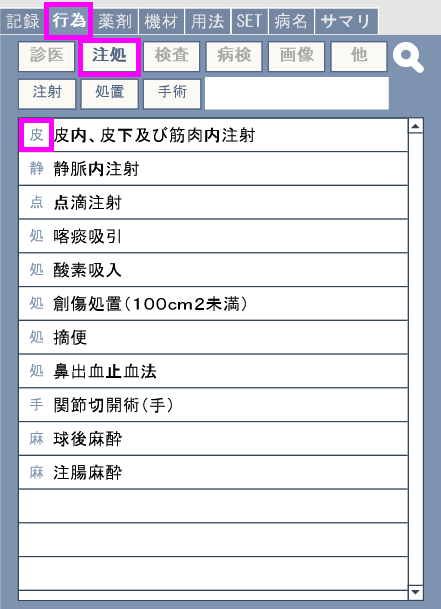
[130000510]皮内、皮下及び筋肉内注射を選択します。 続けてT[薬剤] B[注射]から薬剤を選択します。
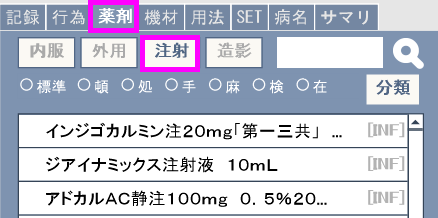
表示されたダイアログで数量を確認します。
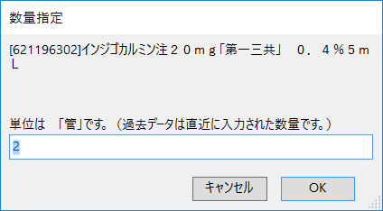
診療行為欄には例として以下のように入力されます
| 【皮下筋注】 [130000510]皮内、皮下及び筋肉内注射 [620006199]イミグランキット皮下注３ｍｇ ０．５ｍＬ[2筒] |
※入力後に数量などの変更がある場合は直接修正してください。
T[行為] B[注処]
[130003510]静脈内注射を選択します。
続けて#T[薬剤]#B[注射]から薬剤を選択します。

表示されたダイアログで数量を確認します。

診療行為欄には例として以下のように入力されます
| 【静注】 [130003510]静脈内注射 [620006199]イミグランキット皮下注３ｍｇ ０．５ｍＬ[2筒] |
※入力後に数量などの変更がある場合は直接修正してください。
T[行為] B[注処]
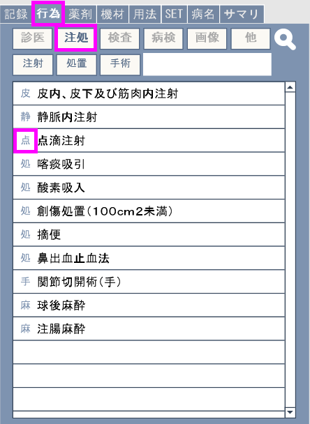
点滴注射による診療行為点数は対象年齢や注射容量によって違うため、これらは概ねレセコン側で自動的に判別されますので手技料は２項あるうちどちらを選択してもコメントとして入力されます。点滴注射の場合はここで診療行為を選択せずに次の【注射薬剤】で薬剤だけを入力しても点滴注射として判断されます。
点滴注射関連項目から該当する診療行為を選択します。
続けてT[薬剤] B[注射]から薬剤を選択します。

表示されたダイアログで数量を確認します。
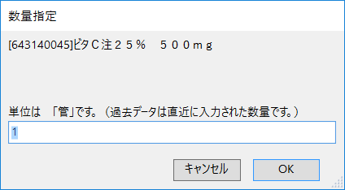
診療行為欄には例として以下のように入力されます
| 【点滴】 [130005310]関節腔内注射 [620004685]スベニールディスポ関節注２５ｍｇ １％２．５ｍＬ[1筒] |
点滴注射の場合は以下のように入力されます
| 【点滴】 /*点滴注射*/（←コメントとして入力される） [620006199]イミグランキット皮下注３ｍｇ ０．５ｍＬ[2筒] |
※入力後に数量などの変更がある場合は直接修正してください。
T[薬剤] B[注射]

T[薬剤] B[注射]から注射薬剤を選択した場合、概ね点滴注射とみなされます。
点滴注射の場合、年齢や注射容量または入院・外来によって点数が違うためここで注射薬剤だけを選択するだけでもかまいません。（レセコンが自動判断できる場合。「日レセ可」）
診療行為欄には例として以下のように入力されます
| 【注射薬剤】 [640412105]生理食塩液 １００ｍＬ[1 袋] |
T[行為] B[注処]
処置関連項目から該当する診療行為を選択します。
診療行為欄には例として以下のように入力されます
| 【処置】 [140040310]消炎鎮痛等処置（器具等による療法） |
酸素吸入などで材料や薬剤等の入力が必要な場合はT[薬剤]またはT[機材]の中から続けて選択し数量を指定します。
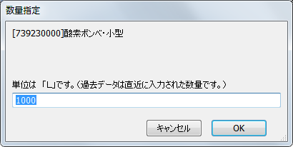
診療行為欄には例として以下のように入力されます
| 【処置】 [140005610]酸素吸入 [739230000]酸素ボンベ・小型[1000Ｌ] |
T[薬剤] B[任意] R[処]
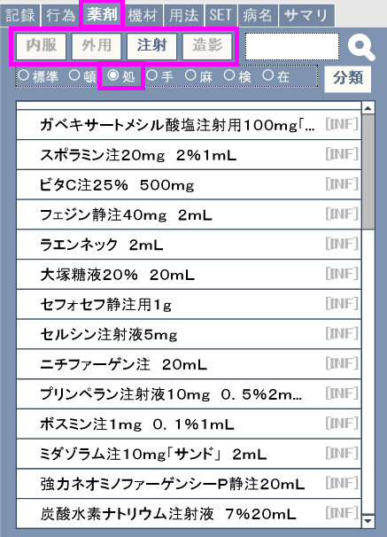
処置で利用した薬剤だけを入力する場合、T[薬剤] B[任意] R[処]を指定して目的の薬剤を選択します。
表示されたダイアログで数量を確認します。
診療行為欄には例として以下のように入力されます
| 【処置】 [620007805](Ｘ)モーラステープ２０ｍｇ・・・[2枚] |
T[行為] B[注処]
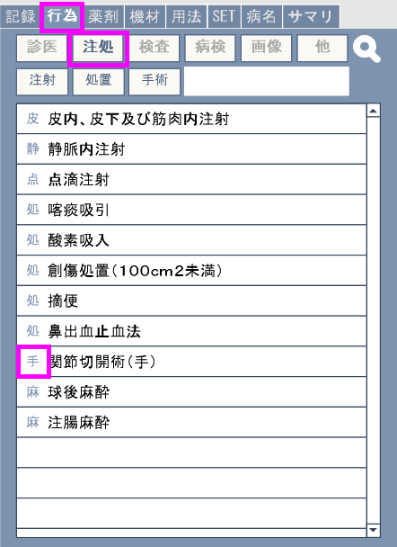
手術で利用した薬剤だけを入力する場合はT[薬剤] B[任意] R[手]から薬剤を指定すると【手術】以下に選択した薬剤が登録されます。
手術関連項目から該当する診療行為を選択します。
使用した薬剤があればT[薬剤] B[任意] R[手]から薬剤を選択します。
表示されたダイアログで数量を確認します。
複数薬剤がある場合は繰り返し薬剤を選択し数量を入力します。
診療行為欄には例として以下のように入力されます
| 【手術】 [150001010]創傷処理（筋肉、臓器に・・・ [620002937]キシロカイン注シリンジ１％ １０ｍＬ[1筒] [620008993]ゲンタシン軟膏０．１％ １ｍｇ[2ｇ] |
T[行為] B[注処]間
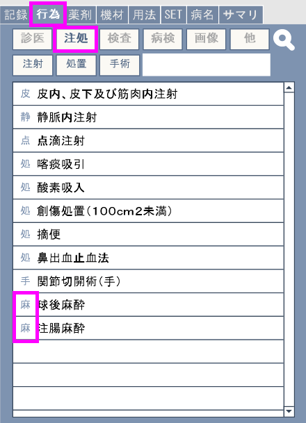
麻酔で利用した薬剤だけを入力する場合はT[薬剤] B[任意] R[麻]から薬剤を指定すると【麻酔】以下に選択した薬剤が登録されます。
麻酔関連項目から該当する診療行為を選択します。
使用した薬剤をT[薬剤] B[任意] R[麻]から薬剤を選択します。
表示されたダイアログで数量を確認します。
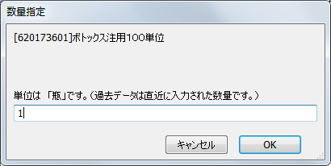
複数薬剤がある場合は繰り返し薬剤を選択し数量を入力します。
診療行為欄には例として以下のように入力されます
| 【麻酔】 [150333410]神経ブロック（眼瞼痙攣、片側顔・・・） [620173601]ボトックス注用１００単位[1瓶] [643310182]生理食塩液 ２０ｍＬ[1管] |
T[行為] B[検査]
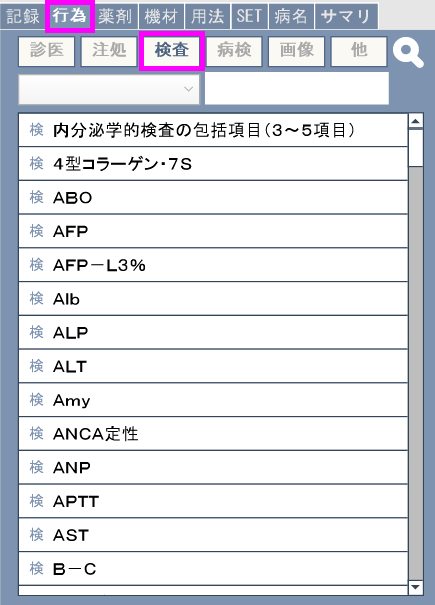
検査で利用した薬剤を入力する場合はT[薬剤] B[任意] R[検]から薬剤を指定すると【検査】以下に選択した薬剤が登録されます。
検査関連項目から該当する診療行為を選択します。
複数項目がある場合は繰り返し入力します。
| 【検査】 [160020010]ＡＬＰ [160022610]ＡＬＴ [160020410]γ ＧＴ [160020610]ＣＫ [160167250]ＬＤＬ コレステロール [160019310]ＵＡ [160019010]ＢＵＮ ・・以下略 |
※検査項目は利用マスタによって呼び名が違う場合があります。
※検査による判断料（月１回のみの算定項目）は入力しないでくさい。これらはレセコンが判断します。
※複数項目による検査はセット登録から選択する事をお勧めします。
T[行為] B[病検]
病理検査関連項目から該当する診療行為を選択します。
複数項目がある場合は繰り返し入力します。
回数などが必要な場合はダイアログで数量を確認します。
診療行為欄には例として以下のように入力されます
| 【病理】 [160060010]Ｔ－Ｍ[12臓器] |
※検査項目は利用マスタによって呼び名が違う場合があります。
※検査による判断料（月１回のみの算定項目）は入力しないでくさい。これらはレセコンが判断します。
※複数項目による検査はセット登録から選択する事をお勧めします。
T[行為] B[画像]
（規則があります）
=MRI.CT=の場合
＜部位＞
＜撮影方法＞
=XP=の場合
＜部位＞
＜撮影方法＞*＜撮影枚数＞
＜仕様フィルム＞*＜枚数＞
＜機材＞or＜フィルム＞(必要な場合
の順番で入力。
※１：ＭＲＩ，ＣＴ２回目以後などの行為はレセコンが判断します。
※２：Ｘ－Ｐの写真診断料などはレセコンが判断します。
※部位などが無い場合はマスタ設定を確認し事前登録作業を行う必要があります。
※３部位コードはORCA側と同じコードを利用するようにしてください。
ORCAではマスタ登録>点数マスタで部位コードを作成します。
画像関連は部位+撮影方法の組合せで入力する必要があります。診断料や判断料はレセコン側が自動算定を行います。
診療行為欄には例として以下のように入力されます
| 【画像】 [002000025]胸部X-P [170027910]単純撮影（デジタル撮影）[2枚] [700750000]画像記録用フィルム（大四ツ切）[2枚] |
| 【画像】 [002100006]頭部CT [170033410]ＣＴ撮影（６４列以上マルチスライス型機器） |
| 【画像】 [002100001]頭部MRI [170020110]単純ＭＲＩ撮影（１．５テスラ以上の機器） |
T[行為] B[他]
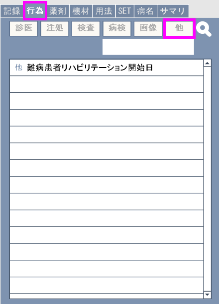
これまでに述べた区分以外の項目はT[行為] B[他]に分類されます。
他関連項目から該当する診療行為を選択します。
数量・回数の指定が必要な場合はダイアログで数量・回数を確認します。
診療行為欄には例として以下のように入力されます
| 【その他】 [101800130]運動器リハビリテーション料（２）[1単位] |
T[用保]
B[定型][補足][数日][他コ]
診療行為に記録する場合のコメントは#B[定型][補足][数日][他コ]
の種類があります。それぞれの以下の様な意味となります。
B[定型]：決まった内容のもの
例：[820000006]健康診断から [820000014]生活保護受給者 など
B [補足]：うしろに必要項目を書き加えるもの
例：[830000032]保険医氏名：山田太郎
B [数日]：日時や数量など数字を埋めるもの
例：[840000056]算定開始 ２３年１２月
B [他コ]上記以外 フリーコメントコードは810000001
例：[810000001]自由に書き込める
※注 ORCA側で作成したコメントがある場合同じコメントコードを作成・追加して利用するようにしてください。
T[記録]B[全Do]orB[薬Do]
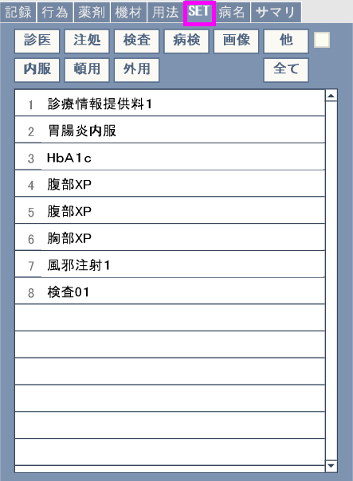
SETはあらかじめ登録しておいた内容を効率よく入力する方法の一つです。よく使う項目や組合せ内容をある程度固定化できる内容をSET登録しておくと、診察の度にあちこち選択する必要がありません。

ＯＫ：入力し、次の項目を表示します。
スキップ：表示されている項目は無視し次の項目を表示します。
終了：入力処理を中止します。
SET登録方法は[診察画面] #T[登録]#T[診療セット登録]に詳細があります。
T[記録] B[※Do]
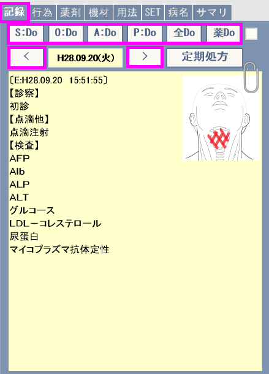
Doは前回行った診療行為を今回も適用する場合に利用できる複製機能のようなものです。対象となるのは左のT[記録]に表示されている内容でB[<]かB[>]で対象日を変更できます。
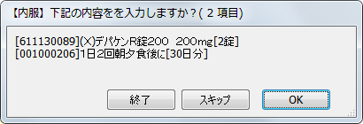
ＯＫ：入力し、次の項目を表示します。
スキップ：表示されている項目は無視し次の項目を表示します。
終了：Do処理を中止します。
T[記録] B[定期処方]
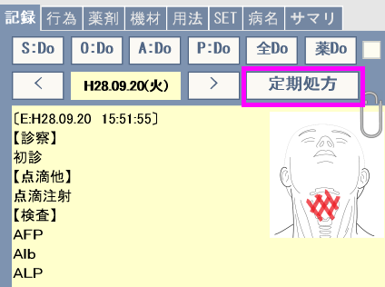
「約束処方」とも呼ばれる事があります。
L[患者情報] F[定期処方]に記録されている患者専用の処方を登録します。
診察記録が完了し、B[確]を押すと、記録データが確定され診療行為内容に応じた適応病名の確認画面が表示されます。
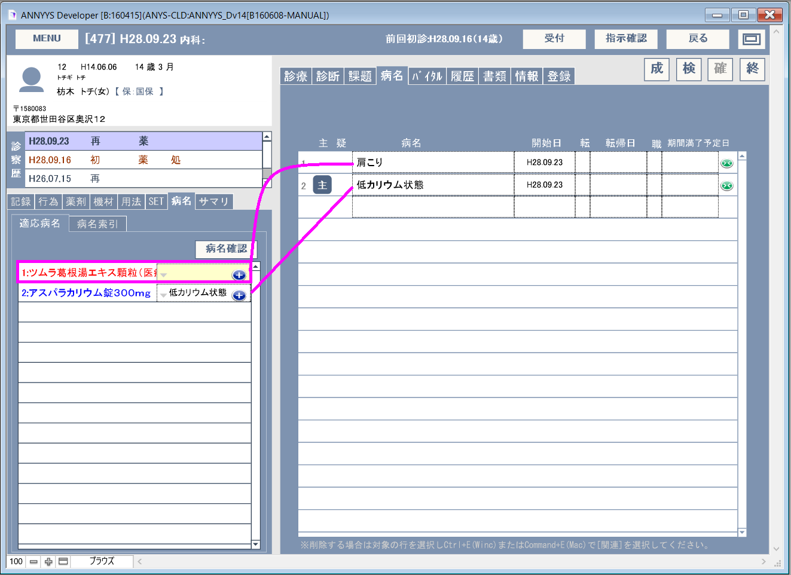

※B[確]を押すと、一時的なデータ保護が行わます。これは診療記録全般を別フィールドにコピーしている単純なものですがキーボードの操作ミスなどで記録内容が消された場合など一時的なデータ復帰が行えます。S[診療行為]>S[一時データからの復帰]>
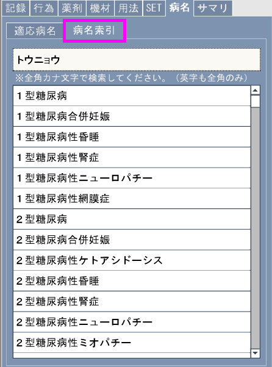
病名のみを索引したいときは#T[病名]#T[病名索引]で行えます。
入力欄には全角カナを入力するようにしてください。
※英字・数字も全角です。
２文字以上の入力で該当する項目を索引できます。
該当する病名が見つかったら、その病名をクリックする事でコンピュータのクリップボード上にコピーされますので入力したい部分でペーストしてください。
｢日レセ」連携している場合は、B[終]で診療行為内容が日レセに対して送信されます。
※注意：「病名確認」で行った病名も一緒に送信されます。
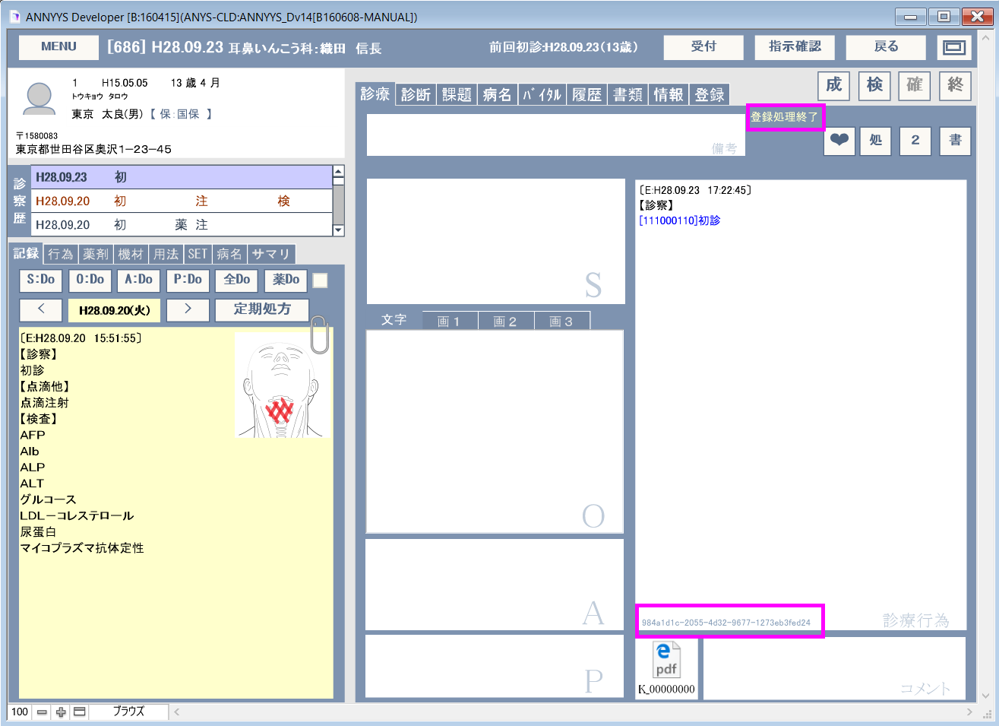
※もしなんらかのエラーが発生しうまく送信できない場合はいったん[受付画面]に戻り、再度#B[診察]でこの画面に戻ってからB[終]を押してみてください。診察画面を開いた時、患者情報欄に保険情報が表示されているか確認してください。ここに表示されている保険情報はORCAから取得しているものです。
B[終]の後、診療行為に何かしら情報を追加した場合これらの内容は「会計オーダーとして送信されていない」部分としては赤字で記録されます。
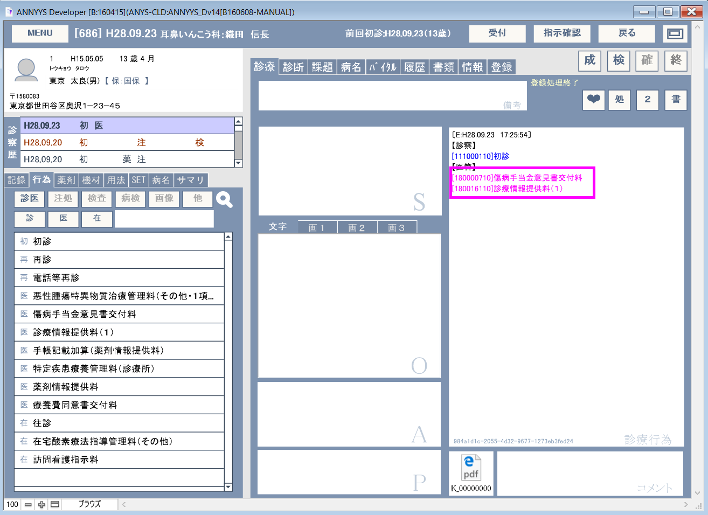
送信済みデータを修正する場合は一旦「削除」を送信し、続いて再度「登録」送信します。
既に、送信済みの場合B[終]を押すと削除する旨のメッセージが表示されますのでB[削除]を押します。
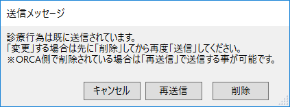
正しく送信が行われた場合受付リストには"会計待ち"と表示されます。


※会計待ちレコードはORCAなどで会計が終了した場合。「会計済み」となります。（B[本日]を押したときに日レセよりデータを取得します。）
その他ORCAとの連携についての詳細は「日レセ連携」を参照してください。
ANNYS_D版の診療記録部分は、ほとんどがテキスト入力による簡単な方法ではありますが。しかしながら、これらテキスト入力部分の編集権限を持つユーザーが、過去データを見返したりしている最中に「うっかりデータを消してしまった！」なんて事も想定されます。
そんな時ANNYYSでは「一時データからの復帰」という処理を用意していますので次の事を覚えていれば慌ててずにトラブル対処ができます。
※「一時データの復帰」が機能するのなマニュアルの冒頭にもあったB[確]を押して確定処理された記録だけですのでご注意ください。「確定」処理された記録かどうかは診察画面のB[確]ボタンの色で判別できます。
「一時データからの復帰」は、ツールバーにある「ANNYYS」>｢診療行為」>「一時データからの復帰」で選択できます。
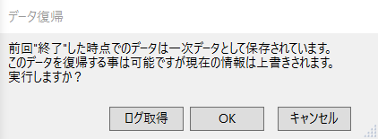
表示されたダイアログの「OK」を選択すれば直前の確定処理を行った際のデータが各フィールドに復帰します。
さらに遡ってデータを復帰させたい場合は「ログ取得」を選択します。
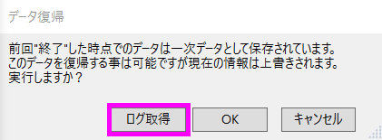
これで過去のB[確]したときのデータが全てコンピュータのクリップボードにコピーされます。
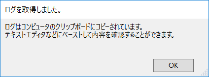
ワードパットなどのテキストエディタを開き、ペースト（右クリック&貼り付け）をすれば過去のログが表示されますので復帰用データに利用できます。
このログは、カルテの記録履歴にも使えます。